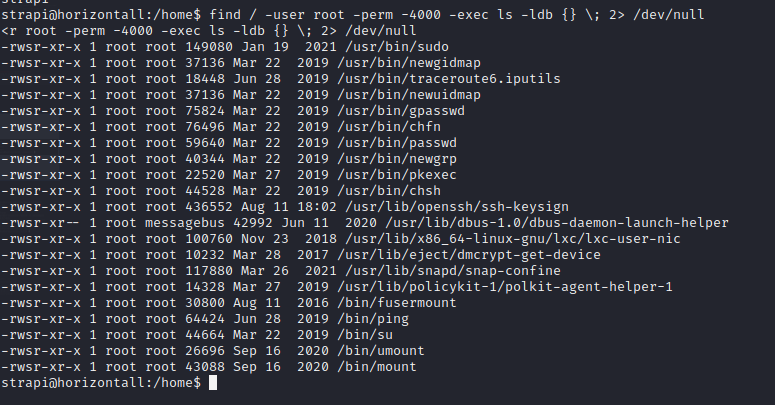

Home
HTB - HORIZONTALL
Horizontall contains two web application vulnerabilities. The first is a strapi vulnerability which enabled us to reset the admin password and perform RCE to get a shell. The second web application vulnerability was used elevate our privileges to root
Scanning and Reconnaissance
Starting with an NMAP scan we have...$ nmap --min-rate=1000 -p- -sC -A $horizontall
Starting Nmap 7.92 ( https://nmap.org ) at 2022-01-07 14:56 WAT
Nmap scan report for 10.10.11.105
Host is up (0.090s latency).
PORT STATE SERVICE VERSION
22/tcp open ssh OpenSSH 7.6p1 Ubuntu 4ubuntu0.3 (Ubuntu Linux; protocol 2.0)
| ssh-hostkey:
| 2048 ee:77:41:43:d4:82:bd:3e:6e:6e:50:cd:ff:6b:0d:d5 (RSA)
| 256 3a:d5:89:d5:da:95:59:d9:df:01:68:37:ca:d5:10:b0 (ECDSA)
|_ 256 4a:00:04:b4:9d:29:e7:af:37:16:1b:4f:80:2d:98:94 (ED25519)
80/tcp open http nginx 1.14.0 (Ubuntu)
|_http-server-header: nginx/1.14.0 (Ubuntu)
|_http-title: Did not follow redirect to http://horizontall.htb
Service Info: OS: Linux; CPE: cpe:/o:linux:linux_kernel
Service detection performed. Please report any incorrect results at https://nmap.org/submit/ .
Nmap done: 1 IP address (1 host up) scanned in 136.58 secondsWeb Server - TCP 80
Opening in a browser get's us redirected to "horizontall.htb" domain. Adding the domain information to the /etc/hosts file give us the web-page No links on the web-application seem to work. Nothing found on the domain. Let's perform sub-domain enumeration (bruteforcing). Using gobuster... We have a sub-domain: "api-prod.horizontall.htb". Let's perform directory enumeration on this subdomain...$ gobuster dir -x "php,txt,html,css,xml,js,bak,sh" -u "http://api-prod.horizontall.htb" -w /usr/share/wordlists/dirbuster/directory-list-2.3-small.txt
/index.html (Status: 200) [Size: 413]
/reviews (Status: 200) [Size: 507]
/users (Status: 403) [Size: 60]
/admin (Status: 200) [Size: 854]
/robots.txt (Status: 200) [Size: 121]URL: https://www.exploit-db.com/exploits/50239
Shell from STRAPI exploit
Running the exploit against the web application we get... As you can see we are able to reset and set new password for the admin user of the strapi application. We also get back a prompt. Now, let's start a listener on our machine, this can be done with the netcat command$ nc -nlvp 4444. Let's see if we can trigger remote code execution and get a shell back to our computer using the command below
Back to our computer, on our listener we have...
We successfully gotten a connection back on our listener. To spawn a proper shell use the command;$ /usr/bin/script -qc /bin/bash /dev/null. Now we should have enough privileges
to read the contents of the /home directory and get the user FLAG. Let's check...
voila (lol), we got the user FLAG. Now we have to get the root FLAG. To get this flag we have to access the root directory and its content. But since we are still strapi user we cannot access the contents
of the root directory. We therefore have to escalate our privileges to root.
Privilege Escalation
Let's check for files that have SUID bit set. SUID permission allows regular users to make use of an executable as if they were root. we have...  Nothing useful. Next, let's check for services that are running locally on the machine... Interesting, we have a server running on port 8000 which is possibly a web server. But we cannot access directly since it is running locally on the machine. To access this service we can use "CHISEL" to port forward the connection to ourselves.Chisel is not on our target machine so let's send it from our machine, start a local server on your machine with the command;
$ python -m http.server 8000. Using wget we can then download chisel from our machine. we have...
Now let's port forward the connection. On your machine start a chisel server with the command;$ chisel server -p 9000 --reverse &. On our target machine connect to the server...
Great, we have connection. Let's check our web browser to confirm that it is a web server...
It is indeed a web server using the laravel framework. At the right bottom of the page, we can confirm the version of the framework to beLaravel v8 (PHP v7.4.18)Checking the internet, vulnerability for this laravel version was found on
https://www.exploit-db.com/exploits/49424. I tried using this exploit, but it seemed to fail most of the time. I found a
better exploit onhttps://github.com/SNCKER/CVE-2021-3129/blob/master/exploit.py.This exploit causes Remote Code Execution on the target machine. I modified the exploit to instruct the target machine (horizontall) to download a php shell that would be used for a reverse connection.
After running the exploit, we should have our php file on the web server. To execute it we have to view the file using the url;
http://127.0.0.1:9001/shell.php.Remember to start a listener on our machine that would receive the connection. If indeed the root is the owner of the web service, we should get a root shell on our computer. After executing the exploit we have... SUCCESS, we now have a root shell and can view the root FLAG.
Thank you for reading my writeup 😀 | Home